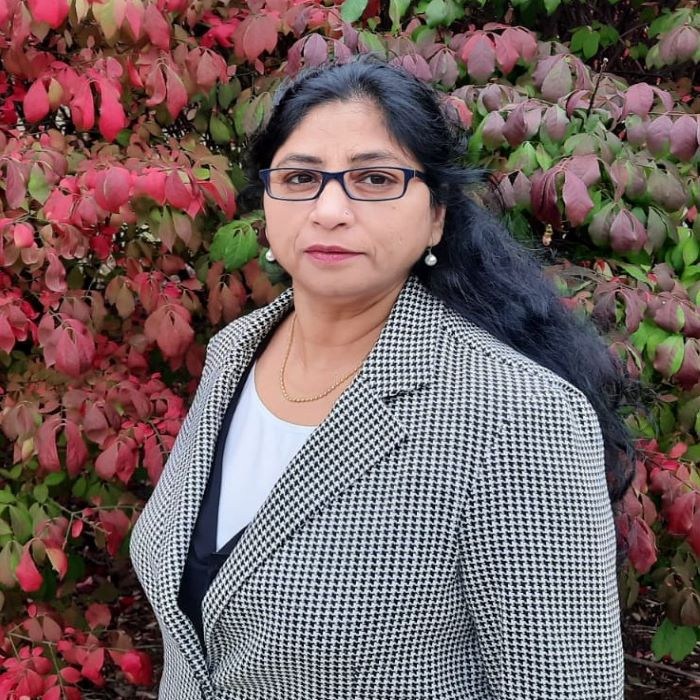

Swati Tewari

Hi there,
Welcome to my digital hub! I will use this platform to represent myself
as an educator and reflect on my professional development. Please feel
free to comment on my content or send me a message at
stewa034@uottawa.ca at anytime!
Thanks for visiting!
My name is Swati Tewari and was born and brought up in Kanpur, U.P., India. I am currently in my first year of the B.Ed. program at university of Ottawa. I am a teacher candidate of year 2023. I am in the intermediate/Secondary (I/S ) division and my teachable subjects are Chemistry and Mathematics. Learning has been my passion and I have been a continuous learner. I hold a PhD degree in Organic Chemistry from Central Drug Research Institute, India; an MSc degree in Chemistry from Indian Institute of Technology (IIT), Kanpur, India and an MBA degree from University of Alberta, Edmonton, Canada. I have taught as a part time professor in Sheridan College, Brampton, Canada, Dawson college, Montréal, Canada and Amity University, Noida, India. Some of the subjects that I taught at the undergraduate and graduate levels include Chemistry, Physics for Chemical Sciences, Environmental Sciences, Introductory Mathematics and Management domain. I also worked as research scientist and research manager in pharmaceutical industries in Canada. I also worked as a post doctoral fellow in Max-Planck Institute of Molecular Physiology, Dortmund, Germany and City University of New York, NY, USA. My research area has been on drug discovery and design as antiparasitic, antibacterial and pain killer agents, and published several research articles in peer reviewed journals.
Camping
When the sun in shining and the weather is nice, you can be sure that I will be out for camping! i have done most of my camping in KOA camps in North America. I had also a great opportunity to do camping in India in 2012 during Kumbh-Mela, Allahabd city in a totally different setting. I have been an avid camper since 2009 and have done camping in various national parks and beaches in provinces of Canada (British columbia, Alberta, PrinceEdward Island and Quebec) and USA (Montanna, South Dakota, Wyomming, Idaho, Utah, Colorado, Michigan, Ohio, and Pennsylvania). My last camping was in August, 2021 in Sauble Beach, Ontario, Canada.


Teaching is one of the most rewarding professions which gives power to make a difference in thousands of children’s life. It gives immense pleasure and satisfaction as teaching is a great support system to fulfill dreams of students. I feel so much powerful when I say to a student that “I believe in you” and “You can do it”. Teaching is the most prestigious profession as you are remembered by so many students on which you have impacted positively. As a teacher, I feel that I am the richest person in this world as what I invested in educating my students, this society got them in returns as doctors, engineers, industrialists, home makers, scientists, social activists, singers, professors, teachers, etc. I strongly believe that in today’s globalized world, cultural diversity is an essential element of sustainable development which calls for revisioning of the educational system in public schools to introduce a more effective method of teaching diverse youth. An exceptional teacher understands that education is more beyond academic excellence. In my opinion, school is a place where students not only learn subjects but also life skills. Schooling is not simply a teaching skill to students but rather developing self-knowledge which helps them to live and understand this world. The teaching skills to manage classes, maintain order and create learning experiences for students are not meaningful unless they are tied to moral and ethical values of teaching. Moral issues are integral part of school organization and administration. Society exerts forces on schools and schools become proxy for all things. What happens in society cascades in schools and therefore, societal problems reflect on teachers’ onus in return. In my opinion, teachers can change the society by leading the society instead of following the society. I strongly believe that teachers should cultivate a sense of community and social responsibility beyond academic excellence for holistic development.
- Synthesis and antifilarial profile of 7-Chloro-4- (substituted amino) quinolines: A new class of antifilarial agents. Swati Tewari, P.M.S. Chauhan and A.P. Bhaduri. Bioorganic & Medicinal Chemistry Letters, 2000, 10, 1409-1412
- Synthesis of Bisquinolines and their in vitro ability to produce methemoglobin in canine Hemolysate. Sandhya Srivastava, Swati Tewari, P.M.S. Chauhan, S.K. Puri, A.P. Bhaduri and V.C. Pandey. Bioorganic & Medicinal Chemistry Letters, 1999, 9, 653-656.
- Synthesis of 7-chloro-4-substituted Aminoquinolines and their in vitro ability to produce methemoglobin in canine hemolysate. Sandhya Srivastava, Swati Tewari, Sanjay K. Srivastava, P.M.S. Chauhan, A.P. Bhaduri, S.K. Puri and V.C. Pandey. Bioorganic & Medicinal Chemistry Letters, 1997, 7(21), 2741-46.
- 1,1’-Dicyano-2-substituted ethylenes: A new class of glucose uptake inhibitors in antifilarial chemotherapy. Swati Tewari, P.M.S. Chauhan, A.P. Bhaduri, S.N. Singh, Nigar Fatma, R.K. Chatterjee and V.M.L. Srivastava. Bioorganic & Medicinal Chemistry Letters, 1997, 7(14), 1891-96.
- Synthesis of cryptands having tritopic receptor sites by [2+3] schiff base condensation using Cs(I) ion as the template. Kaliappa G. Ragunathan, Rameshwar Shukla, Swati Mishra and Parimal K. Bhardwaj. Tetrahedron Letters,1993, 34(35), 5631-34.